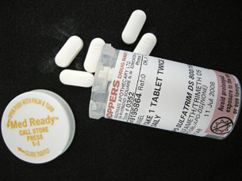

Module 7—Principles of Chemical Equilibrium
 Reflect and Connect
Reflect and Connect

When taking antibiotics, it is advised that you take the drug at regular time intervals. Can you think of why it is important to take the drug at the times specified?
In order for a drug to have its desired effect, it has to reach a certain concentration in the body. This concentration can be regarded as an equilibrium concentration, since the concentration is a result of the processes of ingestion and absorption of the drug (which will increase the concentration) and the processes of metabolism and excretion (which will decrease the concentration). Can you think of how the processes to reach an equilibrium in the concentration of a medicine in the body are similar to those in the investigation in which you simulated a dynamic equilibrium?
 Module 7: Lesson 4 Assignment
Module 7: Lesson 4 Assignment
There is no assignment for this lesson.